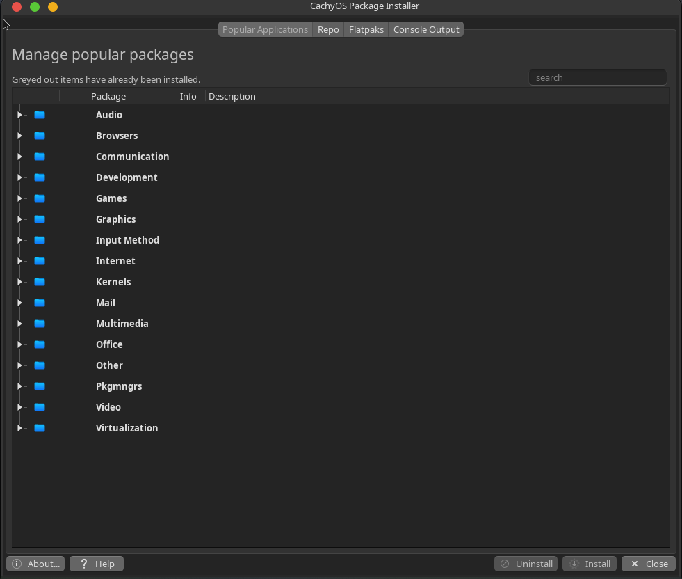
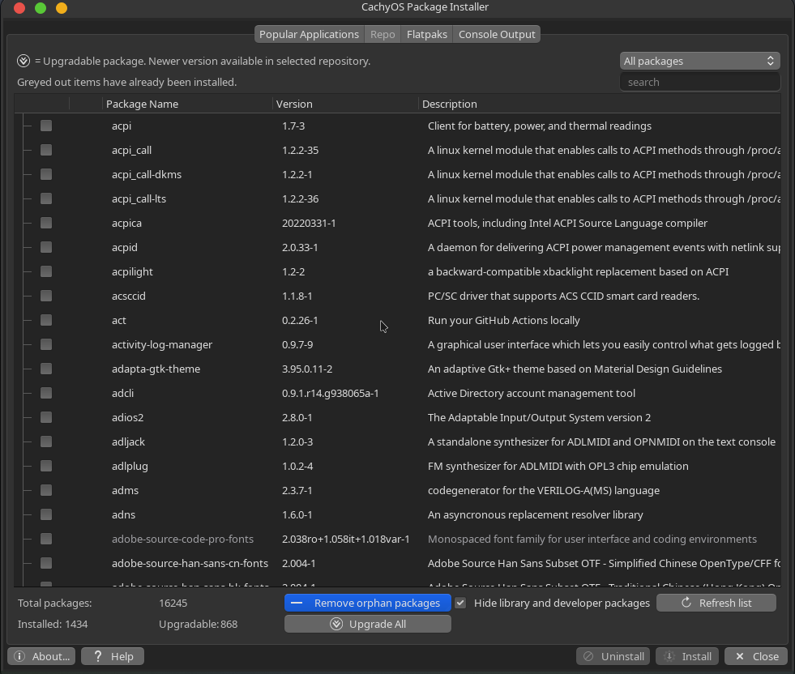
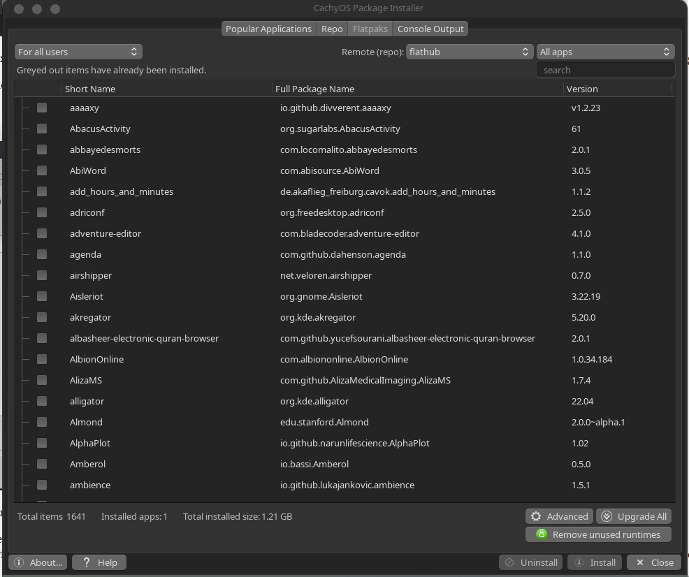
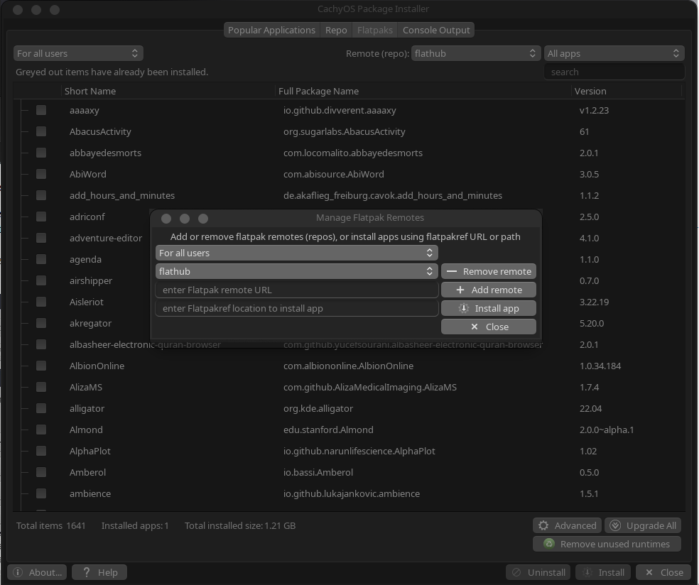

LAGUNTZA: CachyOS pakete instalatzailea
Laguntza hau CachyOS pakete instalatzailearentzat da. "Aplikazio ezagunak" fitxaren bertsio bat mantentzen du aplikazio independente gisa.
Whisker menuko gogokoen zerrendan agertzen da lehenetsi gisa; baina kendu egin bada, egin klik Hasiera menua ≻ Sistema ≻ CachyOS pakete instalatzailea eta eman Administratzaile-pasahitza (root).

Aplikazio ezagunak
- Zabaldu kategoriak gezi txikiarekin eskuragarri dauden paketeak ikusteko; informazio gehiago (pantaila-argazkiak barne, ahal denean) informazio-ikono txikian klik eginez eskura daiteke.
- Bilaketa-kutxak aplikazioen izenak aztertuko ditu eta bat datozenak zuhaitzean erakutsiko ditu.
- Markatu nahi dituzunak eta egin klik Instalatu botoian.
- Terminaleko irteera bistaratuko da; lehenik biltegiak eguneratuko dira eta ondoren zure paketeak instalatuko dira.
- Pakete bat instalatuta badago jada, desinstalatzeko edo berriro instalatzeko aukera izango duzu.
- Arazoak balira, log fitxategi bat dago /var/log/cachyospi.log eta /var/log/cachyospi.log.old helbideetan foroan argitaratu dezazun.
Biltegia (Repo)

Fitxa honek CachyOS Linuxerako eskuragarri dagoen aplikazio-katalogo osorako sarbidea ematen dizu. Ezaugarri multzo mugatua du eta ez da Synaptic bezalako pakete-kudeatzaile oso baten ordezkoa. Kontuan hartu CachyOS pakete instalatzailea Synaptic-en osagarria dela.
- Paketeak "Aplikazio ezagunak" fitxan erabiltzen den modu antzean kudeatu daitezke.
Flatpaks

Flatpaks pakete mota bat dira, dependentzia guztiak barne dituztenak eta Linux banaketa askotan funtzionatzeko diseinatuta daudenak.
- Ez dira perfektuak: batzuek baliteke ondo ez funtzionatzea, zure itxura-gaia ez jarraitzea, etab.
- Instalatzen duzun lehen flatpak-ak ziurrenik exekuzio-ingurune (runtime) handi bat beharko du; beraz, denbora asko beharko du deskargatzeko eta leku handia hartuko du zure disko gogorrean (2GB inguru), baina hurrengo flatpak-ek ingurune hori erabili ahal izango dute, eta egoera hobetu egingo da pare bat instalatu ondoren.
- Lehenetsi gisa, "flathub" urruneko biltegia erabiltzen da. Beste batzuk gehitu daitezke "Aurreratua" elkarrizketa-koadroaren bidez.
- Flatpak-ak ".ref" fitxategien bidez ere instalatu ditzakezu "Aurreratua" atalean.
